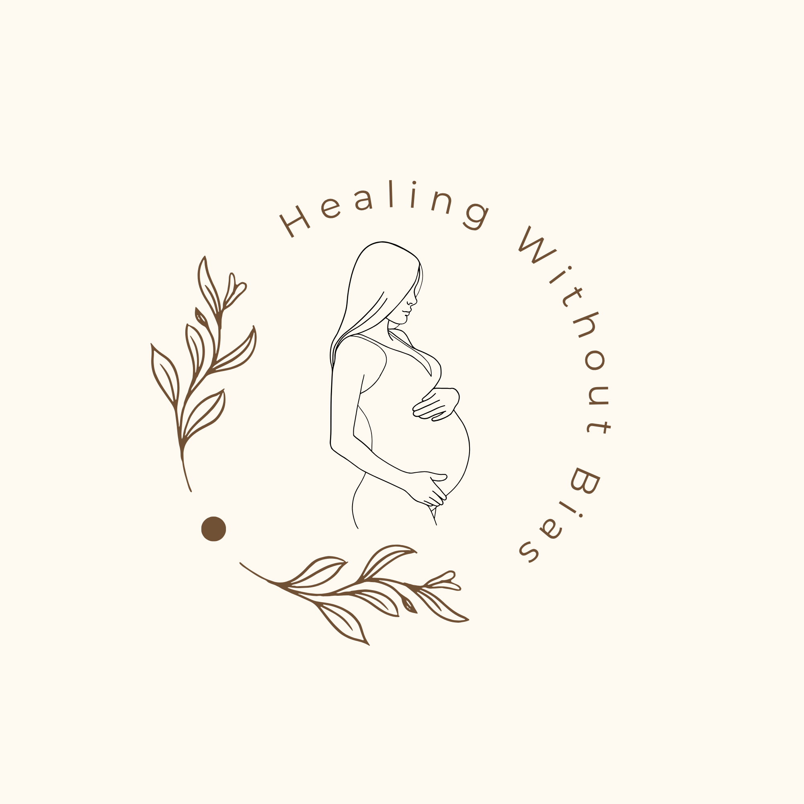
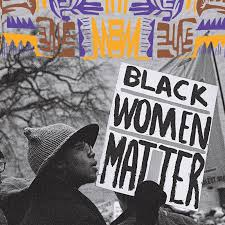

Educating. Empowering. Advocating for Change.
Welcome to Healing Without Bias — a space dedicated to educating, empowering, and advocating for Black women navigating an unequal healthcare system. You deserve to be heard. You deserve to be seen. You deserve equitable care.

Image source: Black Feminist Fund. (n.d.). Our advocacy [Photograph]. Black Feminist Fund. https://blackfeministfund.org/our-advocacy/
Black women in America deserve better. For too long, a healthcare system built without them in mind has failed them — dismissing their pain, limiting their access, and leaving too many without the coverage they need. Race, gender, and income should never determine the quality of care someone receives. Yet for Black women, especially those with low incomes, that is exactly what happens every single day.
Low-income Black women remain disproportionately caught in a Medicaid coverage gap — trapped between eligibility thresholds that leave them without consistent or adequate coverage. When they do access care, they are met with a healthcare system fraught with implicit bias and institutional racism.
This site exists to contribute towards changing that! Healing Without Bias is an educational advocacy tool designed to inform Black women about the gaps they face, the resources available to them, and their rights within the healthcare system. Because every woman deserves care that is compassionate, unbiased, and equitable.